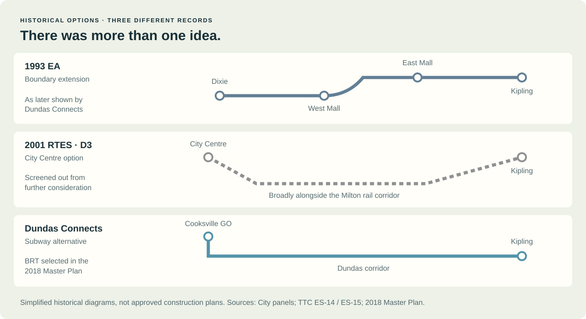

City Centre was considered.
The TTC’s D3 option reached City Centre but was screened out. The later Dundas subway alternative ended at Cooksville GO. They are different studies, not today’s approved route.
TTC sourceAN INDEPENDENT EXPLORATION
Explore a possible connection in the city around it.
Illustrative idea · not an approved routeBuilding the city view…
The purple line is a geographic sketch. Its height on the map is for legibility; it does not show a tunnel, viaduct or selected station sites.
Explore the city atlasTHE IDEA
An independent visual study by Daniel Sultan. Unaffiliated with the City, TTC, Metrolinx or any campaign. No approved alignment, station locations, funding or opening date is implied.
The TTC’s D3 option reached City Centre but was screened out. The later Dundas subway alternative ended at Cooksville GO. They are different studies, not today’s approved route.
TTC sourceThe City endorsed Dundas Connects with bus rapid transit. Dundas BRT remains a separate project; this illustration does not replace it.
City sourceBonnie Crombie’s September 24 announcement proposed examining a Kipling–Sherway–Mississauga connection, including elevated options. It did not select an alignment.
Primary announcement
The city uses the atlas’s sourced building and terrain models. Future buildings are retained proposals, not a prediction that everything will be built. Building shapes and source dates vary.
The purple connection is newly authored for this exploration, inspired by the broad historical corridor and current discussion. Area labels are geographic anchors, not proposed station entrances. The Toronto end extends beyond the detailed Mississauga model.
Exact routing, intermediate stops, transfers, construction method, depth and feasibility would need a formal study. The overlay deliberately stays separate from the city’s real transport geometry.
Download map notesReviewed 26 September 2026. Public primary documents; no private correspondence is reproduced.